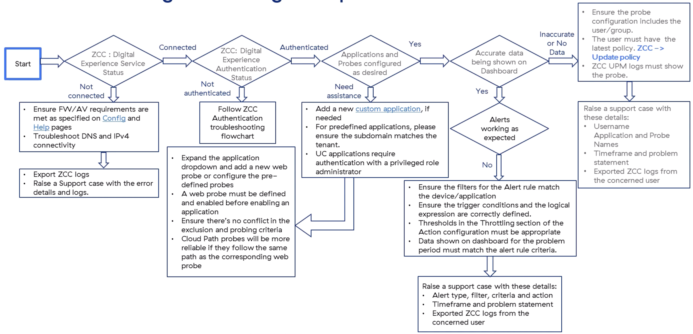
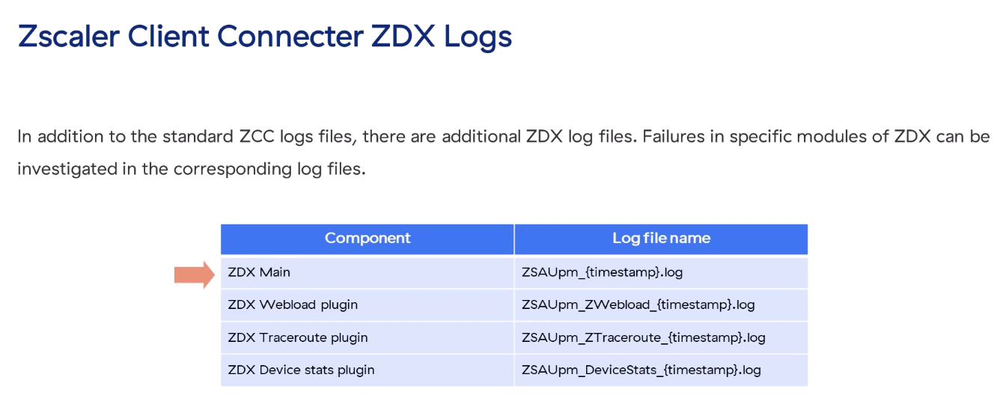
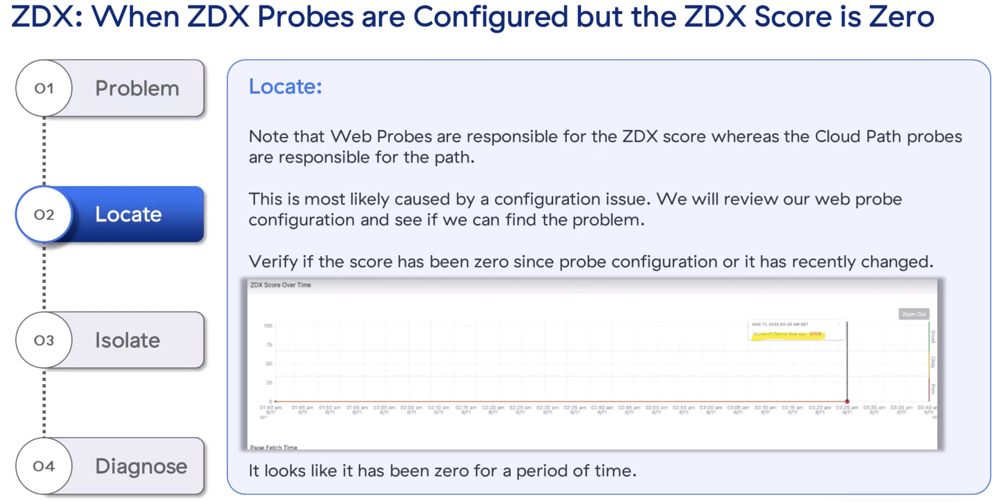
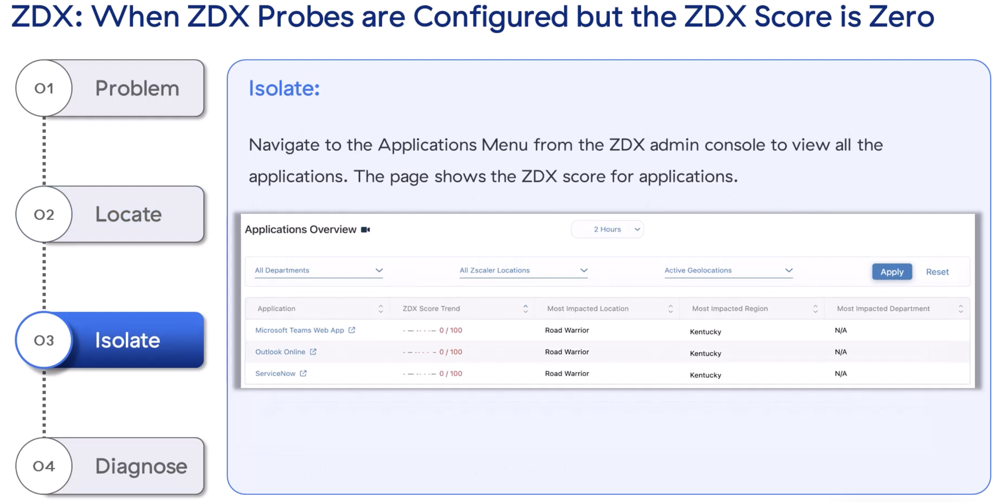
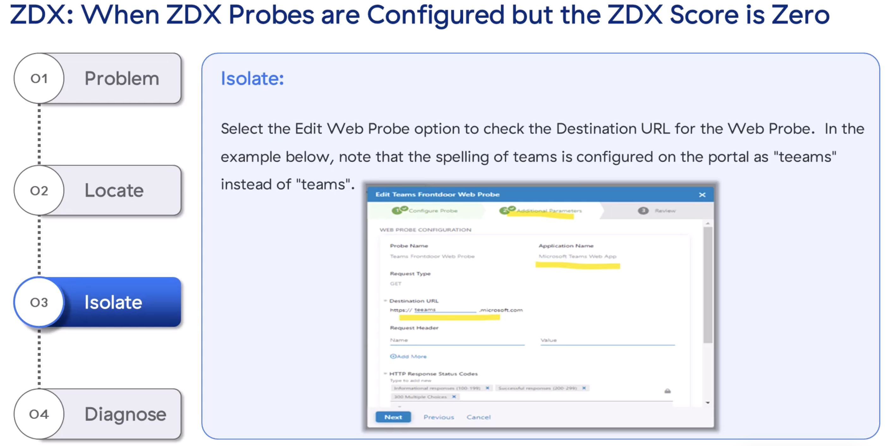

ZDX probes, scores of zero, and the Follow-Redirect curiosity
"ZDX scores are only as accurate as your probes — and probes are only as reachable as the URL you typed."
💭THINK FIRST · ZDX IS ZCC'S COUSIN
ZDX runs as a module inside Zscaler Client Connector — same install pipeline, same firewall/AV exceptions, plus its own log files. When the user sees "Service Off", the troubleshoot starts in ZCC tray logs, not ZDX dashboards.
If the ZDX tab is visible in ZCC but Service Status is Red, what does that narrow the cause down to?
Why does each ZDX module have its own log file (Webload, Traceroute, Device Stats) rather than one combined log?
Q1 — MODEL ANSWER
The ZDX tab appearing proves ZDX is licensed and enabled for the user in the Mobile Admin UI — so the Admin-side config is correct. The issue is client-side: either the install/upgrade of the ZDX module (ZSAUpm) failed, or the user explicitly turned the service off in the tray. That narrows the next click to ZSATray/ZSAUpm logs and Task Manager.
Q2 — MODEL ANSWER
Each plugin has different sampling rates, error modes, and verbosity. Splitting logs by module keeps each file scannable and lets support engineers reach for the right one (e.g. Webload for application probes, Traceroute for path probes, DeviceStats for end-device performance) without sifting through unrelated noise.
SECTION 0
ZDX Troubleshooting Flow & Client Logs
ZDX (Zscaler Digital Experience) is delivered as a lightweight module inside ZCC. The troubleshoot flow walks: ZCC Digital Experience Service Status → Authentication → Application/Probe configured → Data being shown on Dashboard → Alerts working. Each branch points at a specific log file or a probe-config screen.

The ZDX troubleshooting decision tree. Five evaluation gates: Service Status (FW/AV/Help-page exceptions) · Authentication (Follow ZCC auth flow) · App/Probe Configured (web probe definition) · Data on Dashboard (probe reachability) · Alerts (filters, thresholds, throttling).
ZDX Client Logs (inside the ZCC log bundle)
The standard ZCC log bundle includes ZSATray, ZSAUpm (the ZDX core), ZSAUpdater, ZSATunnel, and ZSAService. ZDX adds these per-module files:

ZDX log files (timestamped). ZSAUpm_{timestamp}.log is the ZDX Main log (UPM = internal name for ZDX). Plug-in logs: ZSAUpm_ZWebload_*.log, ZSAUpm_ZTraceroute_*.log, ZSAUpm_DeviceStats_*.log.
💡UPM = ZDX
"UPM" is the internal Zscaler name for ZDX. Anywhere you see ZSAUpm in logs, file names, or tray messages, treat it as ZDX. The tray-log line "UI: User clicked turn off UPM service" means the user disabled ZDX.
🧠
MENTAL NOTE
ZDX core log: ZSAUpm_{timestamp}.log. Plugin logs: ZWebload (app probes), ZTraceroute (path probes), DeviceStats (end-device perf). "UPM" in any log/message = ZDX. ZCC tray message "User clicked turn off UPM service" = user disabled ZDX.
ASK A QUESTION
ADD A NOTE
💭THINK FIRST · ZDX SERVICE STATUS IS RED
ZDX tab shows up in ZCC, but its Service Status indicator is Red. The user expected probes to be running; nothing is happening. Three independent failure modes look identical.
Which Task Manager service should be running when ZDX is healthy, and what is it called?
If ZSAUpm.exe exists in Program Files\Zscaler\ZSAUpm but isn't running, what does that suggest vs. when it doesn't exist at all?
Q1 — MODEL ANSWER
ZSAUpm in Task Manager → Services. If it's Stopped, ZDX is off. If it's not listed at all, the ZDX module isn't installed. Both surface as a red Service Status indicator.
Q2 — MODEL ANSWER
Exists-but-not-running usually means the user turned it off — confirm with tray logs "User clicked turn off UPM service" or "UPM is already installed, but turned off by user". Doesn't-exist-at-all means the install/upgrade failed — escalate via Restart ZDX, then exit ZCC and re-launch (which forces an update + re-install attempt).
USE CASE 1 · ZCC
Installation Issue — ZCC ZDX Service Status is Off
Symptom: In the ZDX tab (Digital Experience) of Zscaler Client Connector, the Service status indicator is Red (Off).
1
PROBLEM
ZDX is enabled for the user, but the local service is reporting Off.
2
LOCATE
Quick sanity: Digital Experience is enabled in the Mobile Admin UI (confirmed by the ZDX tab being present in ZCC). So the problem is client-side — investigate ZCC install and service state.
3
ISOLATE
Two probes:
Review ZSATray and ZSAUpm logs for errors related to UPM (the ZDX core).
Inspect {Program Files}\Zscaler\ZSAUpm — is ZSAUPM.exe present? Open Task Manager → Services and check if ZSAUpm is Running or Stopped.
If the user previously turned ZDX off, the tray log will contain:
"UI: User clicked turn off UPM service"
"UPM is already installed, but turned off by user"
4
DIAGNOSE
Three remedies in escalating order:
If user-disabled → turn ZDX back on via the button in the ZDX tab.
If it doesn't come back, click Restart ZDX; logout and login.
If still failing → exit ZCC and re-launch (forces an update / re-install attempt of the ZDX module). If still failing, open a Support case and attach the ZCC log bundle.
🧠
MENTAL NOTE
ZDX off → check {Program Files}\Zscaler\ZSAUpm for ZSAUPM.exe + check ZSAUpm in Task Manager → Services. Tray log "User clicked turn off UPM service" = user disabled it. Fix order: tray toggle → Restart ZDX → logout/login → exit + relaunch ZCC → support case with full log bundle.
ASK A QUESTION
ADD A NOTE
💭THINK FIRST · PROBES CONFIGURED, SCORE = 0
ZDX is running. Probes are configured. The Score Trend chart is flat at zero. The probe machine works in principle — what's the most common ZDX probe-misconfig that produces a zero rather than an error?
If Web probes drive the ZDX score and Cloud Path probes drive the path data, what does a permanent zero score tell you about which probe broke?
How would https://teeams.microsoft.com (typo) and https://teams.microsoft.com look different on the score chart over time?
Q1 — MODEL ANSWER
It's a Web Probe problem, not a Cloud Path problem. The ZDX Score is computed from Web Probe response data (availability, latency, performance). A consistently zero score means the Web Probe never reached its destination — whereas a Cloud Path problem would still show a numeric score with missing path detail.
Q2 — MODEL ANSWER
The typo URL is unreachable, so the probe always fails — the score is permanently zero (a flat line at the bottom). The correct URL produces a high score that fluctuates with real network conditions. The "is the chart literally pinned at zero" question is itself diagnostic.
USE CASE 2 · ZDX
ZDX Probes Configured but Score Is Zero
Symptom: ZDX probes are configured for an application, but its ZDX Score is zero.
1
PROBLEM
Probes exist for the application. The application's ZDX Score is 0.
2
LOCATE
Web probes drive the ZDX score; Cloud Path probes drive the path data. Zero score → web-probe issue, most often a config issue. Review the score over time — has it been zero since probe creation, or did it recently change?
3
ISOLATE
In the ZDX admin console:
Navigate to Applications Menu, find the affected app.
Open Configurations → Probes and select the relevant Web Probe.
Click Edit Web Probe and inspect the Destination URL.
Typos and copy-paste errors are common — e.g. https://teeams.microsoft.com instead of https://teams.microsoft.com.
4
DIAGNOSE
If the Destination URL is wrong, the probe can never reach the actual application — hence zero score. Correct the URL; the score will populate on the next probe cycle. For custom applications, always confirm the URL of the real service (especially when creating the probe from a template).

ZDX Score Over Time chart showing the score has been zero for an extended period — a tell-tale signature of an unreachable probe destination (vs. a fluctuating score, which indicates a real-world performance issue).

ZDX Applications Overview. Use this to confirm the affected app (e.g. Microsoft Teams Web App) and jump from there to Configurations → Probes for that app.

Edit Web Probe → Destination URL. The example shows https://teeams.microsoft.com — a typo of "teams". The probe never reaches the real Teams endpoint, so ZDX score stays at zero.
🧠
MENTAL NOTE
Permanent ZDX score = 0 → Web Probe (not Cloud Path) is broken. First click: ZDX → Configurations → Probes → Edit Web Probe → Destination URL. Typos are the #1 cause in custom probes. Real performance issues show a fluctuating score, not a flat zero.
ASK A QUESTION
ADD A NOTE
💭THINK FIRST · APP AVAILABLE, BUT SERVER SENT 307
Probe is configured to accept 200–299 and 304. Server is returning 307. Probe shows the application as available anyway. That's not a bug — it's a feature called Follow Redirect, and it can confuse anyone who's looking under the hood.
What is the practical reason ZDX has a Follow Redirect option for web probes?
If the user reports the dashboard is "wrong" because the response code doesn't match config, when is that actually worth investigating?
Q1 — MODEL ANSWER
Real-world SaaS endpoints commonly redirect — safemarch.com → www.safemarch.com, login.microsoftonline.com → tenant URL, etc. Without Follow Redirect, every probe of a redirecting host would fail and report the app as down. Follow Redirect lets the probe chase the redirect and evaluate the final response against the configured status codes — which is the user's real experience.
Q2 — MODEL ANSWER
Almost never. If the dashboard shows the app as available but the user is functionally fine, the probe and Follow Redirect are doing their job. The only time it matters is if Follow Redirect is enabled but you actually want to detect the redirect itself as a failure mode — then disable Follow Redirect for that probe.
USE CASE 3 · ZDX
App Available; Server Response Code Doesn't Match Probe Config
Symptom: The application dashboard does not show any issue even though the server is sending a 307 response code, which is not in the probe's configured accepted-codes list.
1
PROBLEM
Probe rule says accept 200–299 and 304. Server returns 307. App is shown as Available. Why?
2
LOCATE
Review the relevant application's score on the dashboard. Note: webload metrics should not be available if the response code didn't match the probe's config — yet the score is fine.
3
ISOLATE
Confirm the configured response codes on the probe (200–299, 304 in this example). The web application is only considered available if these codes are returned.
Capture an HTTP header trace for the probe. Confirm the server is returning 307 — but also see what comes next (the redirected response).
4
DIAGNOSE
301, 302, and 307 are redirect codes. Review the Follow Redirect toggle in the probe's additional parameters. When enabled, Zscaler Client Connector follows the URL in the redirect response — the next response code is matched against the configured list to determine availability.
Example: probe configured for https://safemarch.com → server returns 301 → ZCC follows to https://www.safemarch.com → if that returns 200, the app is marked Available. This is by design. To detect the redirect itself, disable Follow Redirect for that probe.
💡"NOT A BUG" CHECKLIST
This is one of the few ZDX scenarios where the right answer is often "no action needed" — Follow Redirect is doing exactly what's documented. Only intervene if the redirect itself is what you want to alert on; then disable Follow Redirect on the probe.
🧠
MENTAL NOTE
Server returns 301/302/307 + probe still shows Available → Follow Redirect is enabled. ZCC follows the redirect, then evaluates the next response code against the configured list. Disable Follow Redirect if you want the redirect itself to flag the app as down.